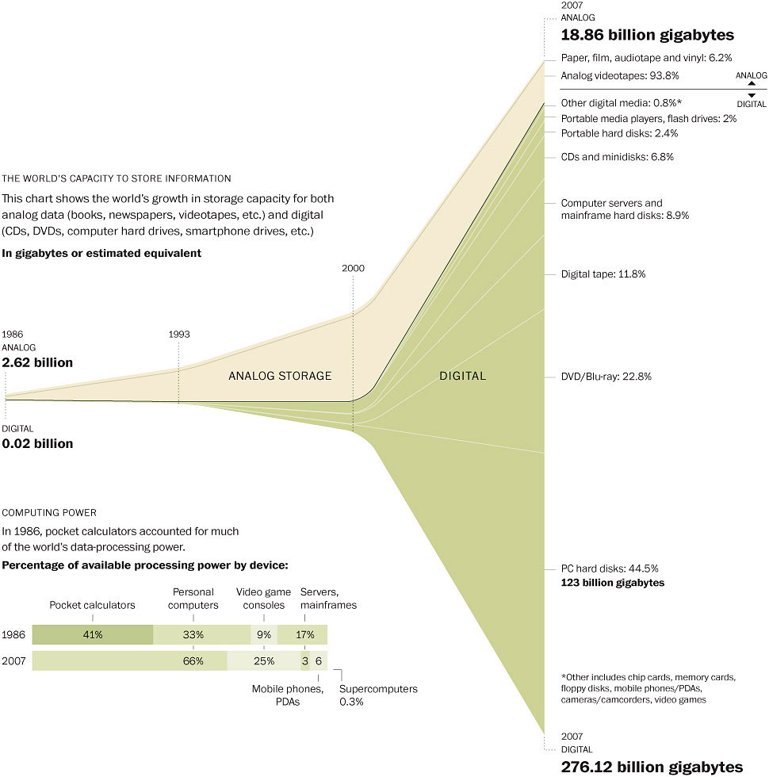
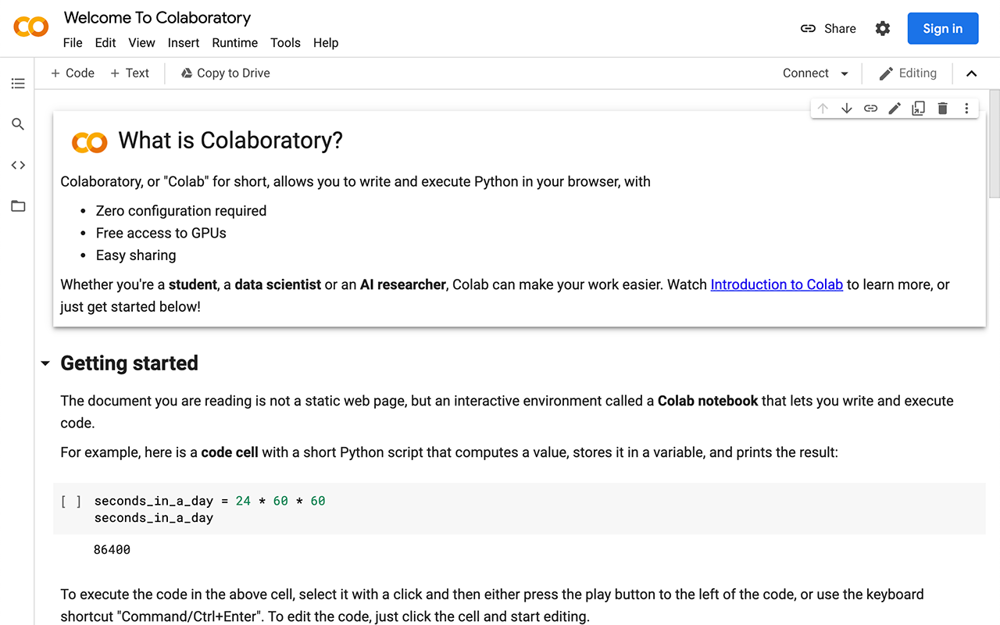

Error in knitr::include_graphics("week1_figs/whatsappmotivation.png"): Cannot find the file(s): "week1_figs/whatsappmotivation.png"PPOL 5203 - Data Science I: Foundations
Week 1: Introductions, Installations, IDEs, Command line
Professor: Rebecca Johnson
Welcome to Data Science I
Plans for Today
Motivating Data Science for Public Policy.
Goals of the course
Introductions
Course Logistics
IDEs
- Jupyter
Introduction to command line
Motivation: Digital Information Age
Abundance of data

Powerful and Cheap Computing Power

World of Generative AI Models

As a consequence, we live in a world:
With abundance of data we can use for research and to recommend policy decisions:
- Internet data, social media, geo-tracking tools, etc…
With easily available technologies to analyze this data at scale
- Your laptops, cloud computing, ChatBots…
But with new technologies that also have novel social implications:
Privacy issues
Use of technology by bad actors.
Use of technology by governments to censor/monitor citizens.
- Policy scholars (but pretty much any researcher) need to be equipped to properly work with this data and understand the effects of these news technologies
Data Science for Public Policy
Data Scientist for Public Policy focuses on computational approaches to solve/understand policy problems.
- It is part of a larger and new field called computational social science
Social science
- Understands human behavior: human psychology, language, economic behavior, political systems, policy problems
- Involve many approaches: qualitative interviews, statistical analysis, simulations
Data Science:
- Tools to work with large-scale data + learning models + novel data sources
Computational Social Science in Practice
Polarization in K-12 School Board Meetings
Steps + Tools
Step 1: Recruiting participants online (SS)
- Online Panels + Facebook Ads
Step 2: Running online surveys (SS)
- Qualtrics + R
Step 3: Development of data donation pipeline (with MDI) (DS/CS)
- JavaScript (JS) + Python
Step 4: Analyze the data (SS/DS)
- SQL + Python + R
Goals of the course
The goal of this course is to teach you:
Computational thinking: how to approach problems and devise solutions from a computational perspective.
Get you started on Python, introduce some useful tools (scrapping, text analysis and API applications of GenAI models), and bit of SQL for applied data science; lay the foundations for the remainder of the core DS sequence
Workflows and tools: Git/GitHub + command line
PPOL 5203 - Data Science I: Foundations
Course Schedule
| Week | Topic | Date |
|---|---|---|
| Week 01 | Introduction, Installations, IDEs, Command line | August 27, 2026 |
| Week 02 | Version Control, Workflow and Reproducibility: Or a bit of Git & GitHub | September 3, 2026 |
| Week 03 | Intro to Python - OOP, Data Types, Control Statements and Functions | September 10, 2026 |
| Week 04 | Intro to Python II: Scaling up your code - Iteration, Comprehension and Functions | September 17, 2026 |
| Week 05 | From Nested lists to Dataframes: Numpy and Intro to Pandas | September 24, 2026 |
| Week 06 | Pandas II: Data Wrangling | October 1, 2026 |
| Week 07 | Joining, Tidying and Visualizing Data | October 8, 2026 |
| Week 08 | Scraping + APIs | October 15, 2026 |
| Week 09 | Statistical Learning | October 22, 2026 |
| Week 10 | Text as Data I: Discovery and Topics | October 29, 2026 |
| Week 11 | Text as Data II: Supervised Learning | November 5, 2026 |
| Week 12 | Generative AI | November 12, 2026 |
| Week 13 | SQL | November 19, 2026 |
| Week 14 | Presentations of Final Projects | December 03, 2026 |
Introductions
Professor Rebecca Johnson
- Assistant Professor at McCourt School.
- Demography, Sociology, and Social Policy PhD
- Previously an Assistant Professor at Dartmouth College, teaching in their major in Quantitative Social Science
My Research: How social service agencies use a mix of data and discretion to allocate scarce resources:
- Ranking of categories (e.g., disability; veteran) on waitlists for housing vouchers
- Parent perceptions of the fairness of using predictive modeling to determine which students need help most urgently versus older methods (e.g., income thresholds; counselor discretion)
- Database of K-12 school board meetings
Your turn!
Name
(Briefly) what you were up to prior to the DSPP
If you could have any data source at your disposal, what would it be?
Logistics
Communication: via slack. Join the workspace!
All materials: hosted on the class website: https://rebeccajohnson88.github.io/PPOL5203_fall2026/
Syllabus: also on the website.
My Office Hours: Wednesdays 11:30AM-1:30PM. Sign up on Calendly
Canvas: Only for official communication! Materials will be hosted in the website
Datacamp: Additional exercises (not graded). Access our free account here
Task: go on slack and send me a message about the data source you choose in the last answer, and if you feel comfortable add a picture to your profile
Evaluation
| Assignment | Percentage of Grade |
|---|---|
| Participation/Attendance | 5% |
| Coding Discussion | 5% |
| Problem Sets | 35% |
| In-class Python Exam | 15% |
| Final Project | 40% |
Problem Sets
Individual submission through GitHub.
| Assignment | Date Assigned | Date Due |
|---|---|---|
| No. 1 | Week 2 | Before EOD of Friday of Week 3 |
| No. 2 | Week 4 | Before EOD of Friday of Week 5 |
| No. 3 | Week 6 | Before EOD of Friday of Week 7 |
| No. 4 | week 8 | Before EOD of Friday of Week 9 |
| No. 5 | November 10 | Before EOD of Friday of Week 111 |
EOD = 11:59pm!
Final Project
You will work on groups!
The project is composed of three parts:
- a 2 page project proposal: (which should be discussed and approved by me)
- an in-class presentation,
- A 10-page project report.
Due dates and Points:
| Requirement | Due | Length | Percentage |
|---|---|---|---|
| Project Proposal | October 31 | 2 pages | 5% |
| Presentation | December 09 | 10-15 minutes | 10% |
| Project Report | December 16 | 10 pages | 25% |
GenAI
You are allowed to use GenAI as you would use google in this class. This means:
Do not copy the responses from GenAI Chatbots – a lot of them are wrong or will just not run on your computer
Use GenAI Chatbots as a auxiliary source.
If your entire homework comes straight from GenAI Chatbots, I will consider it plagiarism.
If you use GenAI Chatbots, I ask you to mention on your code how chatgpt worked for you.
In-class Python Exam
This will take place after the Python content (after week 11). This will be a short exam, either using pen or paper or on a computer without accessing LLMs. It will be easy to complete if you have engaged with the content.
Let’s take a break!
Survey Results
Summary of the survey
Most of you have some experience with Python.
Very few of you were using primarily Python in your work before!
- Most others are using R and Excel!
Most of you have Python in your laptops, some still do not have a github account. If you are having issues after today, talk to your TAs.
Main Policy Areas:
- Social Media/Tech (Talk to me!)
- Election (Talk to Professor Warshaw, Bailey or Ladd)
- Education (Talk with Professor Johnson)
Open Ended
this is a big group of international students, and some are concerned about not having english as you first language!
- THIS IS FINE ! I hope my non-native and strongly accented English will encourage you to participate in class and speak up!
“That’s just what translation is, I think. That’s all speaking is. Listening to the other and trying to see past your own biases to glimpse what they’re trying to say. Showing yourself to the world, and hoping someone else understands.” - R.F. Kuang, Babel
Open Ended
Some of you are slightly anxious about Python and the pace of the class
Python is definitely harder than excel and stata.
But you will be fine!
Our approach: We start slow, cover the basics, and move fast!
Transiton: Coding!
Set up your course infra-structure
Install Python
Install Jupyter
Setup your Git/GitHub account
- Homework: Try to make one successful Git push before class next week.
Jupyter:
Jupyter Notebook Tutorial in the Class Website
Note on my approach on Notebooks: I will go over quite quickly through the notebooks. You should run them by yourselves at a later point!
Command Line
Datacamp Course
- Join our team
- Manipulating files and directories in Introduction to Shell
Additional Materials: Quarto
Totally optional to use!
See you next week!
Data science I: Foundations